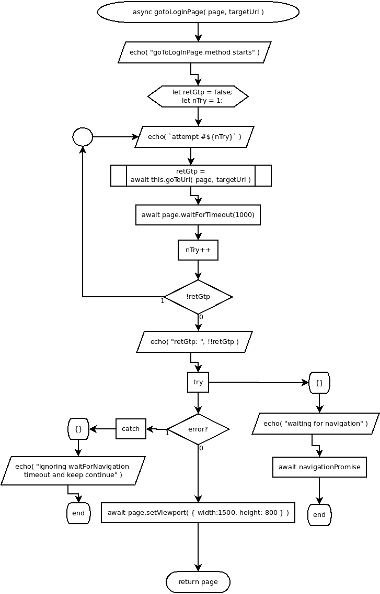

async goToLogInPage( page, targetUrl )
Flowchart

Code
async goToLogInPage( page, targetUrl ){
// go to login page
echo( "goToLogInPage method starts" );
let retGtp = false;
let nTry = 1;
do{
echo( `attempt #${nTry}` );
retGtp = await this.goToUri( page, targetUrl );
await page.waitForTimeout(1000);
nTry++
}while( !retGtp );
echo( "retGtp: ", !!retGtp );
try{
echo( "waiting for navigation" );
await navigationPromise;
} catch {
echo( "ignoring waitForNavigation timeout and keep continue" );
}
await page.setViewport( { width:1500, height: 800 } );
return page;
}
Refers to:
-
async goToUri( page, uri )